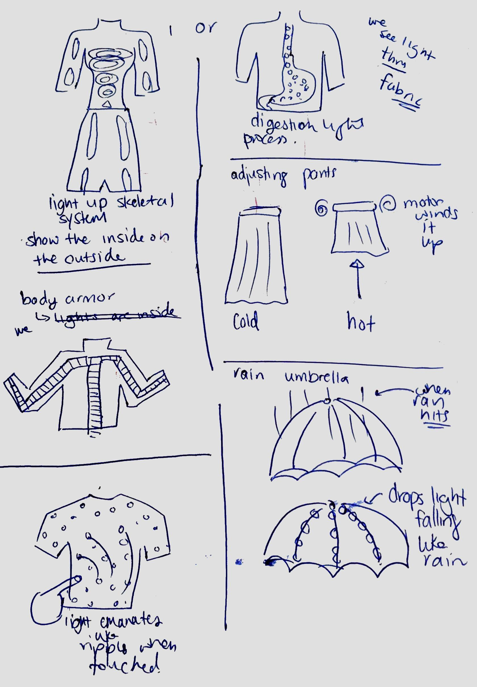
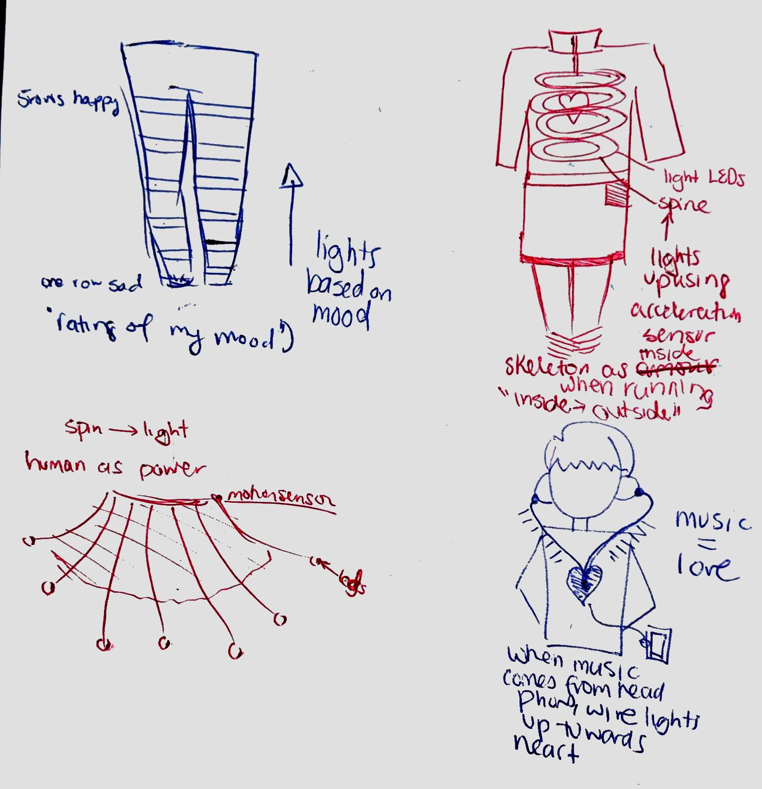
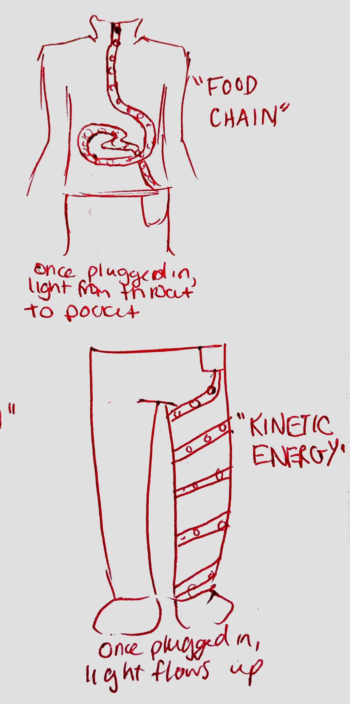
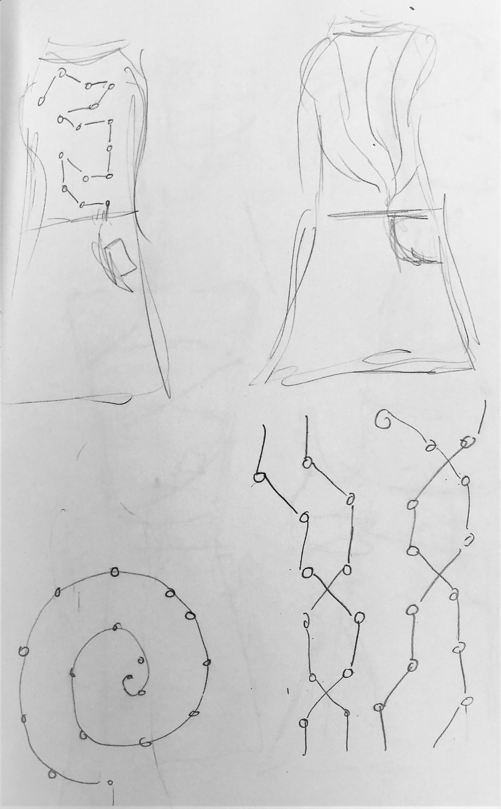
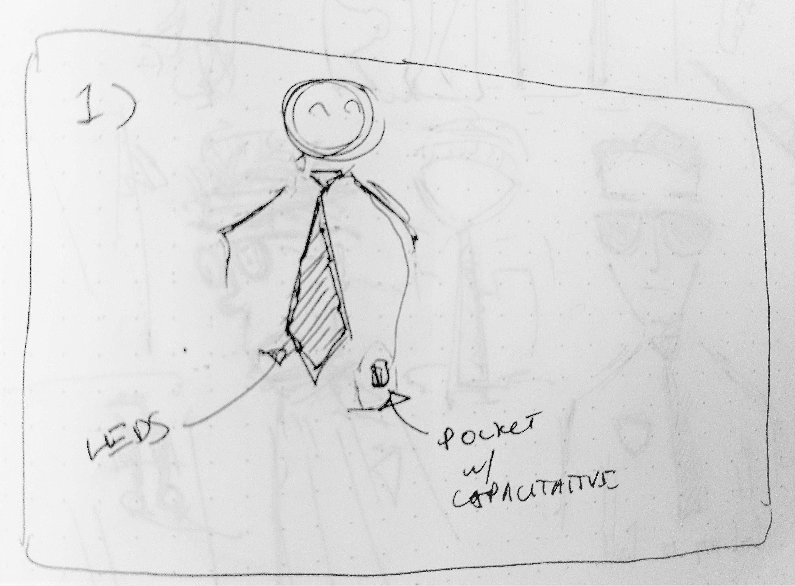
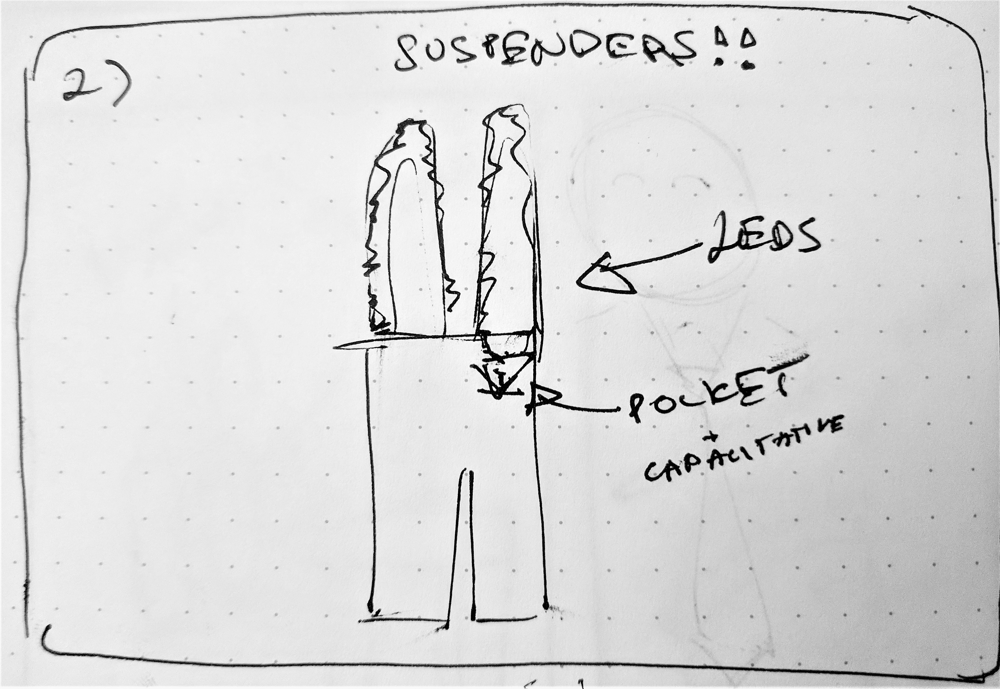
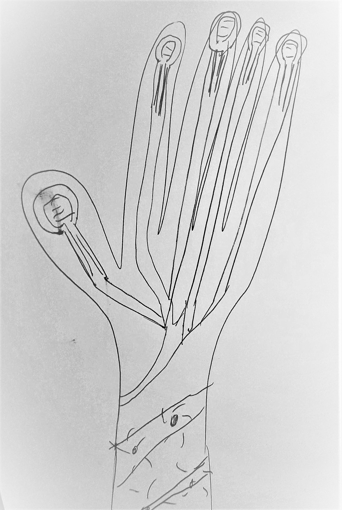
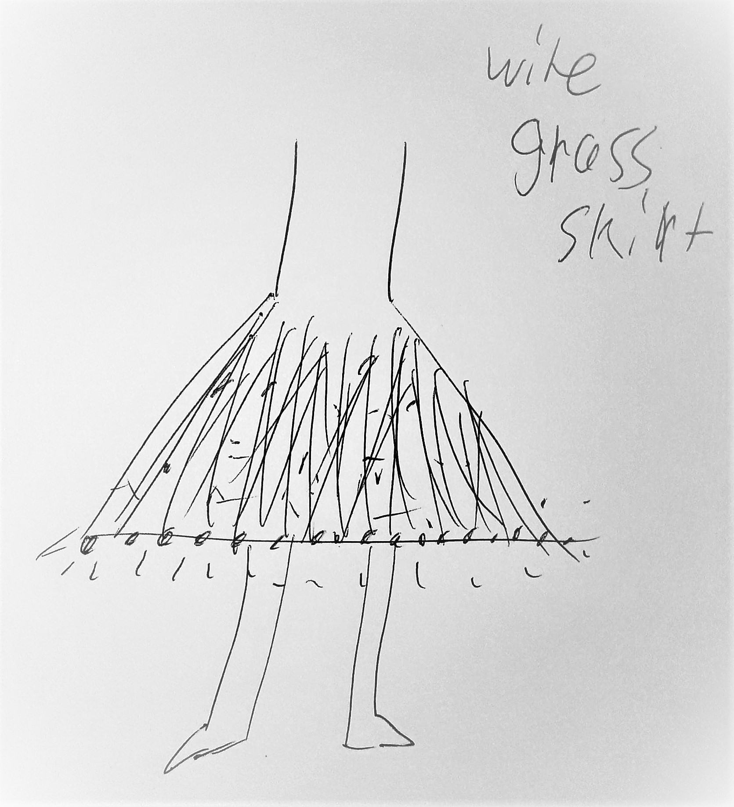
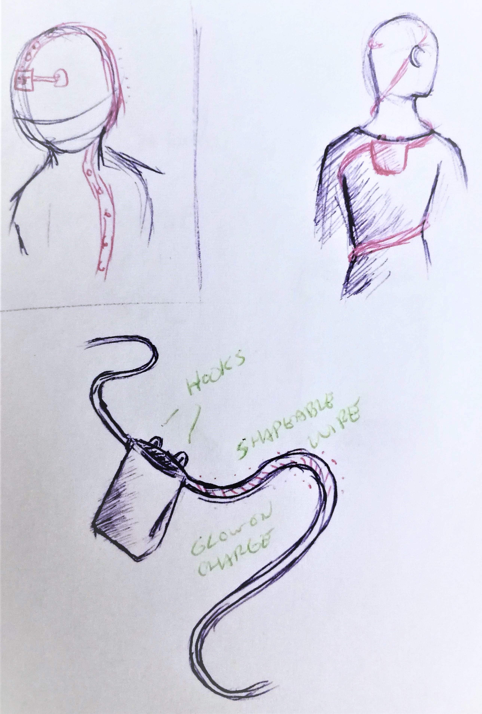
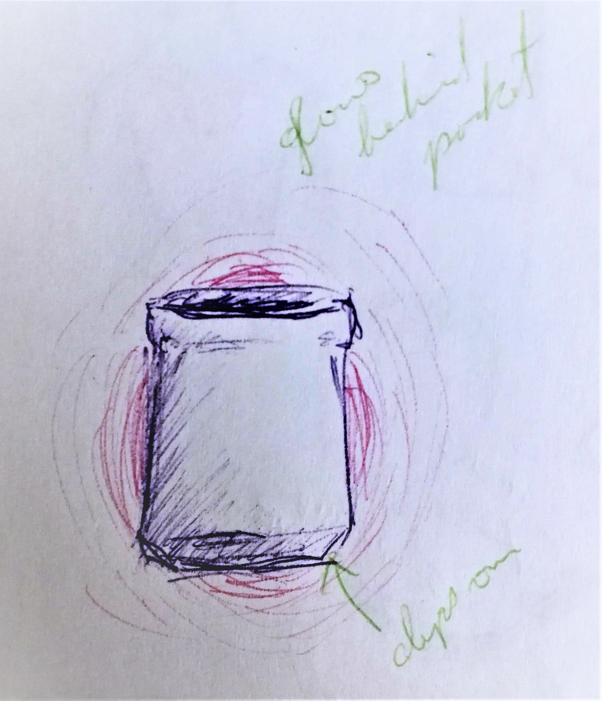

I thought that for fashion, lights would have the most dramatic effect, so most of my initial ideas were using LEDs as output.
|
 |
|
 |
We decided to implement Michaela's idea of giving girls pockets, but not just that - also charging your phone while they're at it. The idea is a mobile pocket that can be attached on the inside of clothes. When the phone is put in the pocket, the phone starts charging.
However, we wanted to make that exciting and make people question their relationship with technology by using LED lights pulsing towards the phone from another location on the body. This makes the body and the technology seem connected, and asks the question: where is the power coming from?The team iterated on different ways to realize this relationship using fashion. We wanted a design that showcased and even focussed on an exposed circuitry aesthetic in order to ask these questions about technology.
Me
|
 |
MichaelaThe LED pattern is a circuit that makes a meaningful pattern of lights as if part of a system of electronics. It asks: isn't the body also a series of circuits? Some of the circuit based patterns Michaela looked at was a double helix pattern (what are we made of?) and a golden ratio spiral (what is beautiful?). |
 |
MaxWhen the phone is charging, a tie lights up to indicate that it is charging. Or a series of LEDS going down suspenders with lights pulsing through them ask: what are the trappings of technology? |
  |
AaronA lit up exoskeleton, so when the phone is charging, the hands light up, as if the current is traveling into our bones. A wire skirt made of LEDs where the light pulses through all of them when the phone is plugged in. |
  |
JackyThe lights travel up the spine and stop like an appendage on the prefrontal cortex. This asks: should there be a direct connection from our technology to our brains? Should we think twice about what we consume? His next design was lights spiralled where the pocket is actually held up on the back of the neck. Another design is where the pocket itself glows when it's charging, pulsing to let the person know. |
  |
We decided on a design that used a cloth sleeve to hold the phone with a sensor inside that was activated when a phone was inserted. This will serve as a fake "connection" that allows the Arduino to charge the phone; it will serve as a proof-of-concept, since we don't have any connectors currently that would allow this. We have a power bank that charges the Arduino, and ideally this fake connection will allow the power in the Arduino to charge the phone.
This pocket would house the electronics of the stitch kit. The wiring of the LED would be exposed to create the circuitry aesthetic of the design.
Our input is the button that gets pressed when the phone enters the pocket. We initially used a resistor but that wasn't giving us consistent results. Our output was the lights that pulsed from an external point towards the phone.
 HADIYA FIRDAUS
HADIYA FIRDAUS